Práctica 6.2
Ejercicios de Docker
Javier Rider Jimenez
Despliegue de una aplicación PHP con Nginx y MySQL usando Docker y docker-compose
0. Conexión ssh
conexión ssh con la máquina virtual
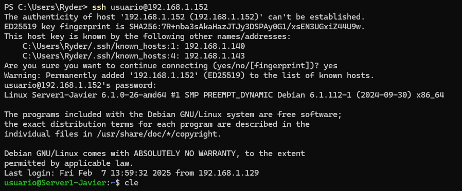
1. Estructura de la aplicación
/usuario/home/practica6-2/ ├── docker-compose.yml ├── nginx │ ├── default.conf │ └── Dockerfile ├── php │ └── Dockerfile └── www └── html └── index.php
mkdir -p /usuario/home/practica6-2/nginx /usuario/home/practica6-2/php /usuario/home/practica6-2/www/html
touch /usuario/home/practica6-2/docker-compose.yml
touch /usuario/home/practica6-2/nginx/default.conf
touch /usuario/home/practica6-2/nginx/Dockerfile
touch /usuario/home/practica6-2/php/Dockerfile
touch /usuario/home/practica6-2/www/html/index.php
Crear la estructura basica de la aplicación, añadiremos mas 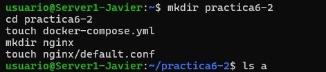
2. Creación de contenedor de Nginx
Creamos el archivo docker-compose.yml con este contenido inicialmente
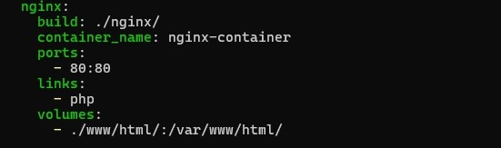
Ahora levantamos el contenedor y verificamos que funciona
sudo docker-compose up -d
sudo docker ps

Si todo esta correcto, podemos ver la pagina de bienvenida de Nginx
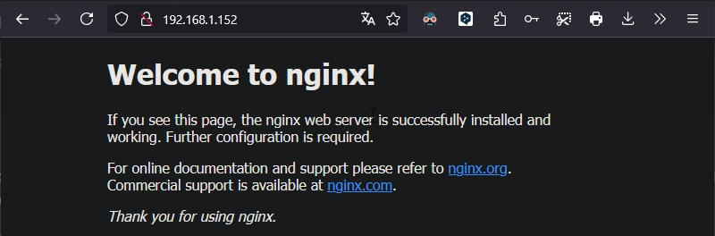
3. Creación de contenedor de PHP
creamos la carpeta en caso de no haberla creado antes y creamos el archivo index.php
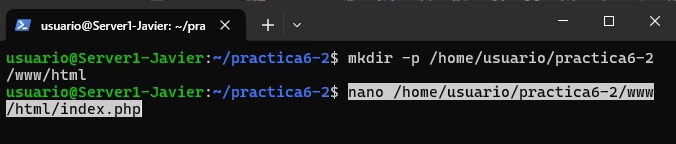
y añadimos el contenido del archivo index.php
<!DOCTYPE html>
<head>
<title>¡Hola mundo!</title>
</head>
<body>
<h1>¡Hola mundo!</h1>
<p><?php echo 'Estamos corriendo PHP, version: ' . phpversion(); ?></p>
</body>
</html>
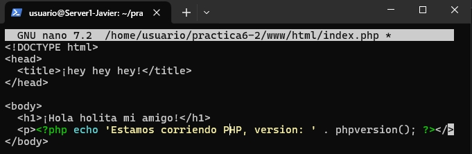
Creamos el archivo de configuración de Nginx
sudo nano /usuario/home/practica6-2/nginx/default.conf
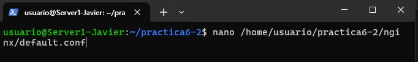 y añadimos el siguiente contenido
server {
listen 80 default_server;
root /var/www/html;
index index.html index.php;
charset utf-8;
location / {
try_files $uri $uri/ /index.php?$query_string;
}
location = /favicon.ico { access_log off; log_not_found off; }
location = /robots.txt { access_log off; log_not_found off; }
access_log off;
error_log /var/log/nginx/error.log error;
sendfile off;
client_max_body_size 100m;
location ~ .php$ {
fastcgi_split_path_info ^(.+.php)(/.+)$;
fastcgi_pass php:9000;
fastcgi_index index.php;
include fastcgi_params;
fastcgi_param SCRIPT_FILENAME $document_root$fastcgi_script_name;
fastcgi_intercept_errors off;
fastcgi_buffer_size 16k;
fastcgi_buffers 4 16k;
}
location ~ /.ht {
deny all;
}
}
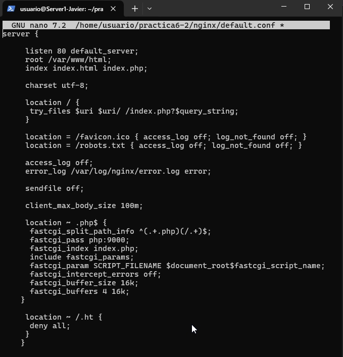
Creamos el archivo Dockerfile de Nginx con el siguiente contenido
sudo nano /usuario/home/practica6-2/nginx/Dockerfile
FROM nginx:latest
COPY ./default.conf /etc/nginx/conf.d/default.conf
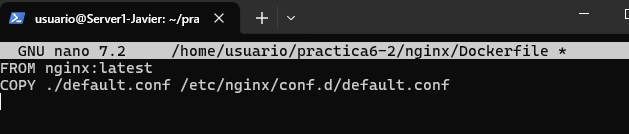
editamos el archivo docker-compose.yml con este contendio, aqui añadimos la parte de php
services:
nginx:
build: ./nginx/
container_name: nginx-container
ports:
- 80:80
links:
- php
volumes:
- ./www/html/:/var/www/html/
php:
image: php:7.0-fpm
container_name: php-container
expose:
- 9000
volumes:
- ./www/html/:/var/www/html/
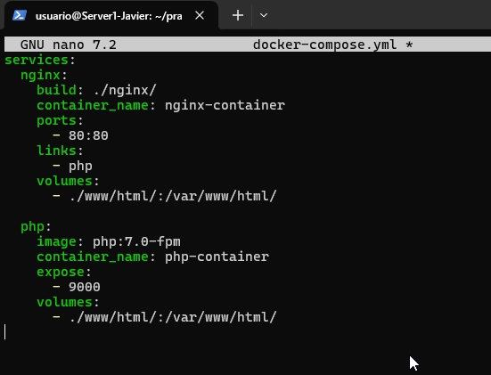
Levantamos los contenedores
sudo docker-compose up -d
sudo docker ps
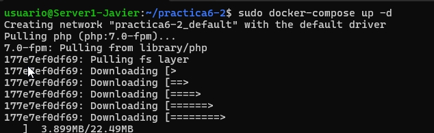 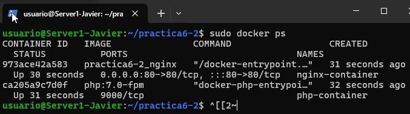
Si todo esta bien, podemos ver la pagina de bienvenida de php
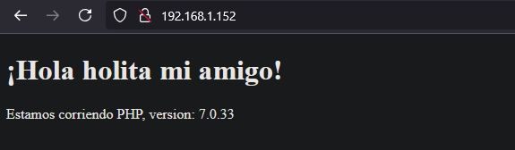
4. Creación de contenedor para datos
Editamos el archivo docker-compose.yml con este contenido
nginx:
build: ./nginx/
container_name: nginx-container
ports:
- 80:80
links:
- php
volumes_from:
- app-data
php:
image: php:7.0-fpm
container_name: php-container
expose:
- 9000
volumes_from:
- app-data
app-data:
image: php:7.0-fpm
container_name: app-data-container
volumes:
- ./www/html/:/var/www/html/
command: "true"
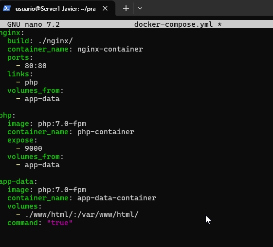
Levantamos los contenedores
sudo docker-compose up -d
sudo docker ps
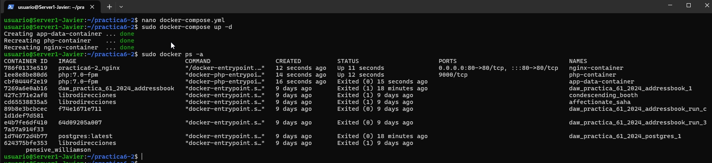 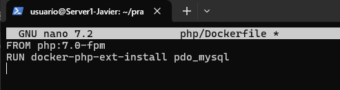
5. Creación de contenedor de MySQL
Creamos el archivo dockerfile de MySQL con el contenido
FROM php:7.0-fpm
RUN docker-php-ext-install pdo_mysql
y actualizamos el archivo docker-compose.yml
services:
nginx:
build: ./nginx/
container_name: nginx-container
ports:
- 80:80
links:
- php
volumes_from:
- app-data
php:
build: ./php/
container_name: php-container
expose:
- 9000
links:
- mysql
volumes_from:
- app-data
app-data:
image: php:7.0-fpm
container_name: app-data-container
volumes:
- ./www/html/:/var/www/html/
command: "true"
mysql:
image: mysql:5.7
container_name: mysql-container
volumes_from:
- mysql-data
environment:
MYSQL_ROOT_PASSWORD: secret
MYSQL_DATABASE: mydb
MYSQL_USER: myuser
MYSQL_PASSWORD: password
mysql-data:
image: mysql:5.7
container_name: mysql-data-container
volumes:
- /var/lib/mysql
command: "true"
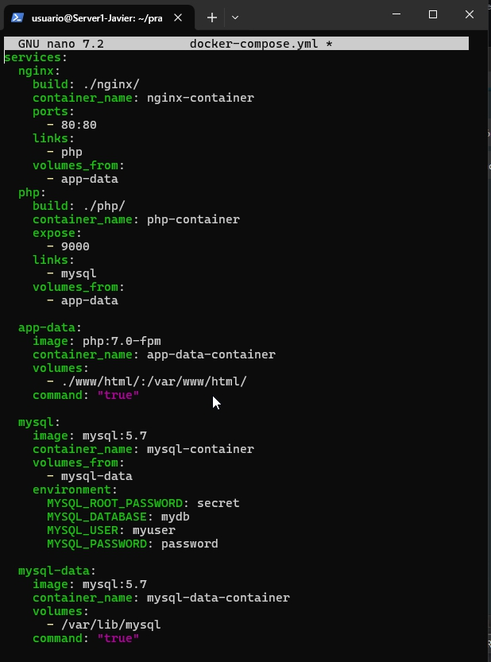
y el index.php
<!DOCTYPE html>
<head>
<title>¡Hola mundo!</title>
</head>
<body>
<h1>¡Hola mundo!</h1>
<p><?php echo 'Estamos corriendo PHP, version: ' . phpversion(); ?></p>
<?
$database ="mydb";
$user = "myuser";
$password = "password";
$host = "mysql";
$connection = new PDO("mysql:host={$host};dbname={$database};charset=utf8", $user, $password);
$query = $connection->query("SELECT TABLE_NAME FROM information_schema.TABLES WHERE TABLE_TYPE='BASE TABLE'");
$tables = $query->fetchAll(PDO::FETCH_COLUMN);
if (empty($tables)) {
echo "<p>No hay tablas en la base de datos \"{$database}\".</p>";
} else {
echo "<p>La base de datos \"{$database}\" tiene las siguientes tablas:</p>";
echo "<ul>";
foreach ($tables as $table) {
echo "<li>{$table}</li>";
}
echo "</ul>";
}
?>
</body>
</html>
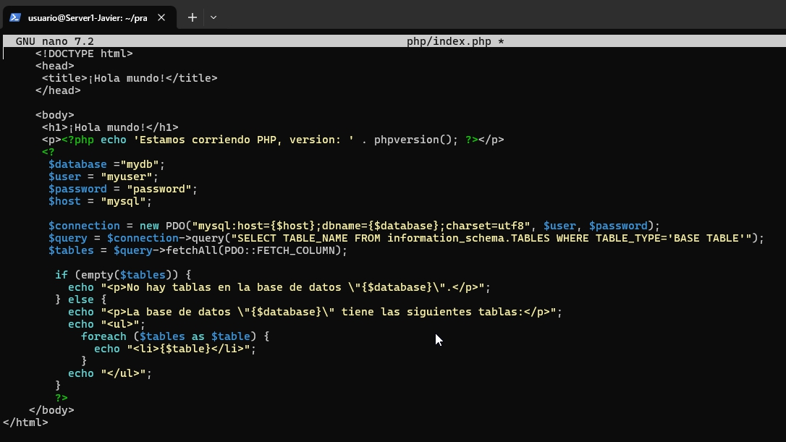
Levantamos los contenedores
sudo docker-compose up -d
sudo docker ps
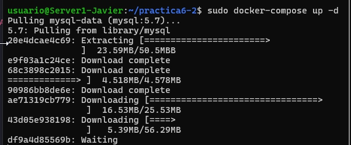
Deberá verse de esta manera si todo esta correcto 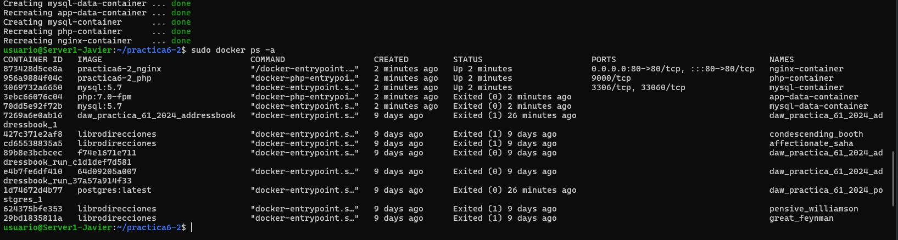
y ahora veremos la pagina de bienvenida de php 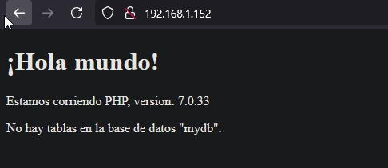
en index.php sustituimos el contenido por este
$user = "root";
$password = "secret";
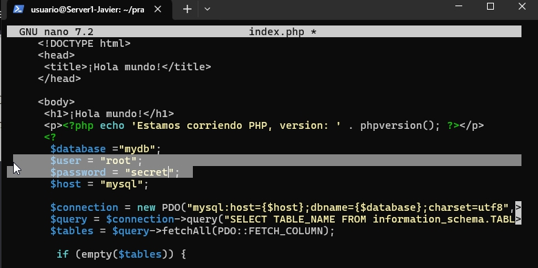
y ahora veremos la pagina de bienvenida de php 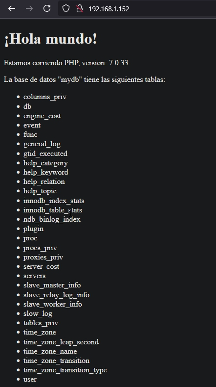
y con esto terminamos la practica 6.2. Tenemos funcionado un servidor web con php y mysql en contenedores docker